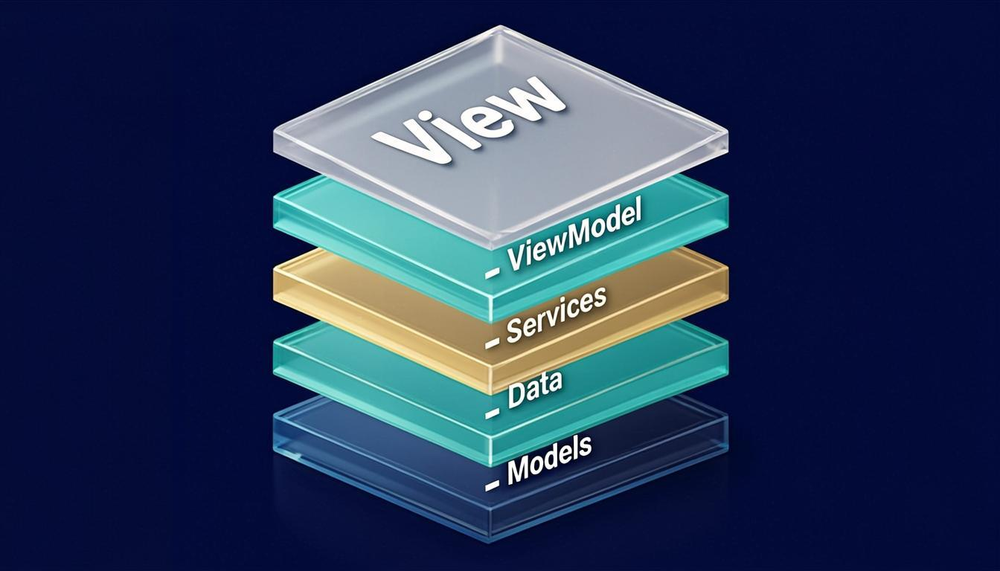
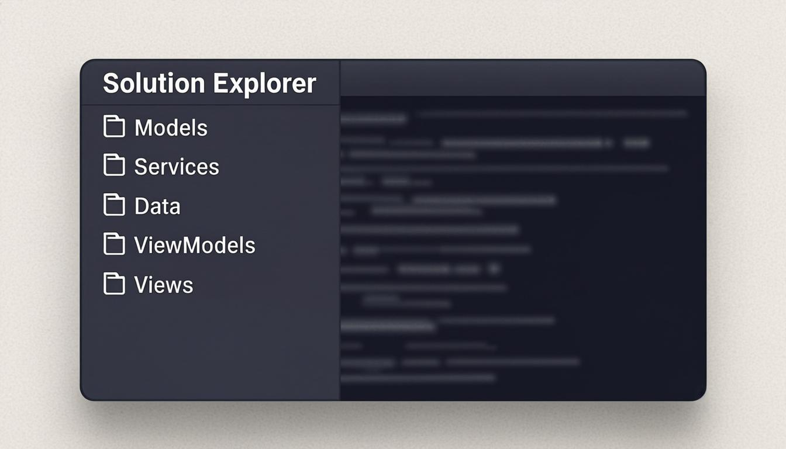

DevCrm 02 - Архитектура слоёв для CRM на WPF: как я захлёбывался в собственном коде и всё-таки вылез
MainViewModel распух до трёх тысяч строк, и я перестал понимать, где что лежит в собственной CRM. Разбор пяти слоёв архитектуры и декомпозиции на WPF — с кодом, схемой и ответами, которые экономят вечер рефакторинга.
MainViewModel распух. Каждый раз, когда я его открываю, по затылку проходит холод: файл не кончается. Так выглядит проект, в котором архитектуры не было с самого начала.
Три тысячи строк. Клиенты, юзеры, задачи, заметки, отчёты, рассылка почты, экспорт документов в PDF. Всё в одном месте. Я пытаюсь найти метод, который решает крошечную задачу, и проваливаюсь в эту кашу с головой. Пока докопаюсь до нужного куска, забуду, за чем шёл. В CRM без слоёв и архитектуры так происходит каждый день.
Ночь. Кофе давно остыл. Я кручу колесо мыши, листаю и понимаю, что даже до середины не дошёл. И пугает уже не поиск. Пугает количество. Строк так много, что они перестали быть кодом и стали стеной, в которую я сам себя замуровал.
Я закрываю файл. Открываю заново. Нет, ничего не изменилось. Тот же хаос, те же сотни методов, сваленные вперемешку. Была минута, когда я всерьёз думал бросить всё и начать проект заново: настолько не хотелось туда лезть. Я даже создал папку под чистый старт. И так её и не открыл. Это была уже не структура приложения, а свалка, в которой я сам себе перестал быть полезен. Ну что за CRM получилась, если в ней страшно что-то поправить.
А началось всё так.
Когда-то я собрал костяк на WPF, накидал экраны и вью-модели, и вся CRM вроде работала. Форма открывалась, добавить клиента можно было, сохранить тоже. Я радовался: вот она, моя CRM, живёт. Об устройстве кода тогда я не думал вовсе: проект был слишком мал, чтобы это что-то меняло.
Только со временем функционал рос, а я всё пихал в один и тот же MainViewModel. Сначала по-мелочи: добавил CRUD для клиентов. Потом юзеры и админ-экран к ним. За ними задачи. Дальше заметки. А затем я закинул туда отправку писем и экспорт в PDF — и ничего не остановило меня: в коде просто не было преград. И в какой-то момент понял: назад дороги нет. Моя срм слепилась в единый ком кода, где уже не разобрать, где что. Каждая сборка висела на честном слове, каждый релиз был лотереей.
Я не заметил, где именно перешагнул черту. Вроде вчера всё было на своих местах, а сегодня я открываю решение и не могу сказать, где лежит загрузка контактов, а где их удаление. Каждая новая фича ложилась туда, где было удобнее дотянуться, а не туда, где ей было место. А рядом с фичами заводились баги, которых потом не находили неделями. Так растёт любая CRM, в которой рефакторинг откладывается до лучших времён.
И стоит честно признать: дело было не в самом MVVM на WPF, а в том, что я отказался придумывать какие-то категории для кода. Всё выглядело «пока терпимо», поэтому никакой системы в коде так и не появилось.
Проблема: когда нет архитектуры, всё валяется кучей
Методы лежали вперемешку: здесь загрузка клиента, там экспорт, рядом письмо и чтение конфига. Пока ты прыгаешь между этими кусками, солнце сядет. Так живёт проект, в котором поиск метода превращается в археологию.
Это уже была не архитектура. Это была солянка. Знакомая картина для любого, кто пишет свою CRM на WPF: компиляция проходит, программа запускается, но любое изменение — как вскрытие: заранее не знаешь, что найдёшь внутри. Своя црм, выросшая с нуля, без разделения кода по категориям приходит к этому состоянию. И чем дольше ждёшь, тем глубже яма, в которую она зарылась.
И дело даже не в объёме файла. Распухший класс тащит за собой всё: от него зависит экран, от экрана зависит валидация, от валидации зависит сохранение. Изменишь строчку внизу — и сверху что-то отвалится. Каждая правка превращается в маленькую рулетку. В такой момент начинаешь сомневаться в самой идее своей CRM — и в своей архитектуре заодно.
По-честному, я даже гордился этим кодом. Мол, вот какой я разработчик, умею держать в голове весь проект. Но мозг так не работает. Приложение росло, а моя способность удерживать его в голове оставалась прежней — проект без слоёв растёт быстрее, чем память. И в какой-то момент чаша перевесила. Со стороны про такую срм говорят с одинаковым удивлением: пока маленькая, всё понятно, а дальше наступает момент, когда нужен порядок. Я дошёл до той точки, где кривая архитектура стала тормозить всю CRM.
Почему я столько тянул? Архитектура не даёт немедленной прибыли: CRM же работает. Но каждый день без слоёв наращивал технический долг, и проценты капали в мой вечер: сначала минута на поиск метода, потом час на отладку случайно задетого кода.
Я сидел над этим файлом до третьей ночи и понял горькое: в угол себя загнал я сам. Не Visual Studio, не C#, не WPF, не MVVM. Я. И выход оставался единственным. Так дальше нельзя. Нужна декомпозиция: разложить всё по местам, даже если придётся потратить вечер.
Слои архитектуры: шаг из трясины
Я начал раскладывать бардак своей срм по слоям. Не по учебнику, а по принципу «что к чему ближе лежит». И выделилось пять основных слоёв архитектуры, каждый со своей зоной ответственности.
Это и есть декомпозиция. Пугающее слово, а на деле простое правило: взял задачу, разбил на части, и это и есть разделение ответственности на практике. Каждая часть уехала в свой угол. Вместо гигантского класса появилась простая структура, которую реально держать в голове. Именно так строится нормальная CRM любого масштаба. Декомпозиция на слои — самая дешёвая архитектура из всех, что я знаю.
При этом слои архитектуры — не просто папки: Models не знает про сервисы, сервисы — про экраны, экраны — про базу. Движение строго в одну сторону. Вот что превращает раскладку файлов в архитектуру.
В учебниках по WPF это зовут многослойной архитектурой приложения. Я пришёл к той же схеме от боли, а не от теории — и многослойная архитектура собралась за вечер.

Models
Сюда ушли модели данных. Клиент, юзер, задача, заметка, взаимодействие. Это параметры, которыми обладает объект. Что у клиента? Id, Name, Phone, Email, Company, статус, кто ведёт. Это вся информация, на которой строится CRM. Проще говоря, скелет приложения, его структура данных.
Архитектура приложения начинается именно с того, с чем ты работаешь. Если модель кривая, все остальные слои будут бороться с её кривизной. Поэтому тут первым делом приводим в порядок сами данные: типы полей, форматы, справочники. В CRM модели — это фундамент, на котором всё держится. Такая дисциплина — уже половина дела.
Модели я держу максимально простыми. Никакой логики, только поля и свойства. Класс, который знает, что такое клиент, но ничего не умеет с ним делать. Так проще заметить, если среди полей пролезло что-то лишнее.
Services
Сюда переехала логика работы с данными: ClientRepository, AuthService, EmailService. Функции доступа к хранилищу больше не живут в экранах. В слоёной архитектуре это мозг приложения: здесь прячется большая часть бизнес-логики всего CRM-проекта.
Здесь живут правила валидации, расчёты, статусы лидов, проверка прав, авторизация и шифрование паролей. Сервисы и репозитории похожи на отделы в компании: каждый занимается своим. Первый репозиторий знает, как сохранить клиента, второй — как отправить письмо, третий — как записать лог действий. Они не лезут в чужие дела. Так устроена любая зрелая архитектура: у каждого — своя зона. Для CRM разделение сервисов по обязанностям критично, иначе снова получается мешанина.
Самый частый вопрос, который я себе задаю, когда собираю очередной сервис: что этот слой обязан делать, а что нет. Бизнес CRM живёт здесь, а не в экранах: экраны зовут простой API сервисов и не лезут глубже. Если сервис начинает подтягивать данные сам, значит, кусок кода не дома. Он уезжает туда, где ему место, и архитектура сервисов остаётся чистой. Например, отправка письма — задача сервиса, а не обработчика кнопки.
Эта же привычка тянет за собой принципы SOLID: один класс — одна задача, а зависимости идут через интерфейсы. Никакой магии — обычное ООП плюс дисциплина. SOLID и слои архитектуры держат друг друга: без слоёв принципы повисают в воздухе.
Data
Здесь живёт Entity Framework Core — библиотека, которая берёт на себя всю возню с SQL. DbContext, фабрика контекстов, интерфейс IDbContext. Клиент, юзер, задача — каждая модель ложится в свою таблицу, связи настраиваются в конфигурации контекста. SQL — единственный язык, которому позволено жить в этом слое. Связка знакомая любому, кто хоть раз тянул базу под .NET. В архитектуре это подвал: его не видно, но на нём стоит весь дом.
На тот момент это был просто SqliteDbContext, но архитектура уже позволяла легко добавить сервер PostgreSQL или SQL Server. Меняешь сам контекст, а сервисы и ViewModel об этом даже не знают. Строка подключения, тип хранилища, миграции — настройки спрятаны внутри слоя Data. Такая архитектура базы данных избавляет от переписывания всей логики при смене хранилища. В продакшн-CRM это особенно ценно: данные живут долго, и базу хочется менять без боли.
Вот это, пожалуй, самый недооценённый слой архитектуры. Люди часто экономят на нём, а потом удивляются, почему смена базы превращается в неделю боли. Если работа с хранилищем спрятана за интерфейсом, контекст подменяется в любой момент: SqliteDbContext легко превращается в PostgreSQL-контекст. Это инкапсуляция в чистом виде: репозиторий прячет SQL, и остальным слоям нет до него дела. Сюда же просится логирование запросов — и логи не расползаются по коду. А перед крупными изменениями — бэкап: резервная копия базы снимается за минуту, и данные в безопасности.
ViewModel
Сюда я вынес методы, которые управляют клиентами и юзерами CRM через сервисы: AddClient добавляет, LoadClient загружает, UpdateClient обновляет, DeleteClient удаляет. Чисто и понятно. В архитектуре CRM это диспетчерский пункт: всё, что делает пользователь, проходит через него.
Ничего лишнего: ViewModel просто дёргает нужные методы, а не содержит всю логику внутри. Его дело — команды: откуда сервис возьмёт данные, ViewModel не спрашивает. И, кстати, именно тут я впервые по-настоящему понял, что такое разделение ответственности.
Вот как это выглядит на практике:
private void AddClient()
{
EditableClient = new Client
{
CreatedAt = DateTime.Now,
Status = "Lead",
AssignedUserId = _authService.GetCurrentUser()?.Id
};
IsEditMode = true;
SelectedClient = null;
}
Прямых обращений к базе тут нет. Просто собрал объект, спросил у сервиса, кто сейчас авторизован, выставил флаги — и никаких ошибок на ровном месте. Вся грязная работа ушла в сервисы, откуда её легко обслуживать и тестировать, — и в этом смысл архитектуры: каждый слой берёт свою часть.
Рядом живёт механика MVVM на WPF: свойства с INotifyPropertyChanged, команды ICommand, ObservableCollection для списков, привязка данных в XAML. Нажатие кнопки рождает событие, событие уходит в команду, команда зовёт метод сервиса. Но это техника, а не слои: вся связь с данными остаётся в вызовах сервисов.
View
View в терминах MVVM — это экран CRM, то, что видит пользователь. XAML-разметка, панели, стили, шрифты, анимации, всплывающие уведомления. Если сравнивать с сайтом, это фронтенд (в веб-разработке его зовут frontend). Здесь ничего не решается, здесь только показывается. И именно за эту простоту я люблю последний слой: он спокоен, потому что вся архитектура трудится за кадром.
Когда всё наконец легло по полкам, я открываю решение и впервые примерно знаю, где что. В папке Data — база. В папке Services — логика. ViewModel, а точнее мой бывший MainViewModel, управляет. View показывает экран. Пока это ещё нелегко, но раскладка уже читаема, и это главное.
Вывод: не задохнуться в собственном коде
Архитектура приложения — это не красивый план на бумаге. Это способ не задохнуться, когда CRM на WPF разрастается. В центре всего лежит декомпозиция и разделение ответственности: каждый слой отвечает только за своё, и изменение в одном месте не ломает десяток других. Это не украшение, а техника безопасности.
Слои архитектуры дают тебе ещё и спокойствие, о котором я сначала даже не думал: ты перестаёшь бояться собственного кода. Когда понятно, где база, где логика, а где экран, проект перестаёт пугать размером. Открыл нужный слой архитектуры — там нужное. Это предсказуемость. А она экономит часы в день и нервы. Это то, за что я полюбил свою CRM снова.
WPF сам подталкивает к MVVM, а слои дают этому паттерну место, где жить. Есть и тихий бонус: связанность падает, и правка перестаёт тянуть за собой половину проекта.
Для своей срм, которую я пишу на WPF, многослойная архитектура стала фундаментом. Без слоёв следующие фичи, будь то корзина, юзеры или что-то ещё, просто утонули бы в собственной сложности. Любая оптимизация начиналась бы с раскопок. Порядок не избавляет от работы, но избавляет от хаоса, с которым эта работа несовместима. Каждая растущая CRM упирается в этот выбор.
Только помни: архитектура — не разовая работа. Раз в месяц я оглядываю слои своей CRM и проверяю разделение ответственности: не протёк ли чужой код не в свой слой? Осмотр занимает минуты, а экономит тот самый вечер.
Ещё вчера я боялся открывать этот проект: кликал по файлу, тут же закрывал, откладывал на потом. А сегодня сел и не заметил, как пролетели два часа. Деление на слои — не про «правильно», а про то, чтобы утром захотеть вернуться к коду. Когда ты строишь свою срм на WPF, порядок окупается каждым днём дальнейшей работы. Вчерашняя версия этой срм пугала файлом на три тысячи строк. Сегодняшняя открывается и не вызывает желания закрыть её обратно.

Частые вопросы
Зачем разделять код на слои?
Чтобы не получить спагетти-код, в котором правка цепляет половину файлов. Разделение ответственности делает код поддерживаемым и тестируемым: сервис легко накрыть юнит-тестами, не запуская интерфейс WPF. Бонусом растёт производительность разработки: новая фича ложится в свой слой, а не поверх чужих методов. Декомпозиция — не про красоту, а про выживание проекта.
Что такое Repository Pattern в WPF?
Это паттерн, который абстрагирует доступ к данным. Вместо SQL-запросов прямо в ViewModel вы создаёте репозиторий, который инкапсулирует всю работу с базой. ViewModel просто вызывает метод репозитория, и всё — SQL не поднимается выше слоя Data. Бонусом — единое место для логирования запросов. Для CRM это снимает головную боль с согласованием данных.
Можно ли начать с простой архитектуры и усложнить позже?
Да. Начните с простых слоёв: Models, ViewModel, View. По мере роста и обновлений выделяйте Services и Data — получится классическая трёхслойная архитектура, знакомая по любому учебнику WPF. Главное, не бояться рефакторинга, когда код стал неподъёмным. Так строится большинство самописных CRM.
Почему DbContext вынесен в отдельный слой?
Чтобы легко менять базу данных без переписывания всей логики. Сегодня CRM на SQLite, завтра — на PostgreSQL. Меняется только контекст, а сервисы и ViewModel не трогаешь. Слой данных — это страховка всего проекта. В долгой разработке CRM это экономия месяцев.
А где тут Dependency Injection и DI-контейнер?
Пока нигде — и это осознанно: простая раскладка без контейнера тоже работает. ViewModel получает сервисы через конструктор, и в маленьком WPF-проекте этого хватает. Когда в CRM зависимостей станет много, подключите DI-контейнер из стандартных пакетов: каждый слой архитектуры зависит от интерфейсов, а не от реализаций, поэтому внедрение зависимостей ляжет без боли.
Что, если не разделять ответственность?
Даже мелкое изменение однажды потребует проверки половины файла. Когда вся бизнес-логика, доступ к данным и управление интерфейсом живут в одном классе WPF-приложения без архитектуры, любой рефакторинг превращается в минное поле. Это цена архитектуры, которой не было. Поддержка превращается в подвиг, а CRM становится источником страха, а не инструментом.
И вот когда всё встало на свои места, я выдохнул. Но радость была недолгой. Однажды всё пошло не так, и мне пришлось в срочном порядке пересмотреть подход к данным. Спойлер: одна кнопка может стоить вам всего.